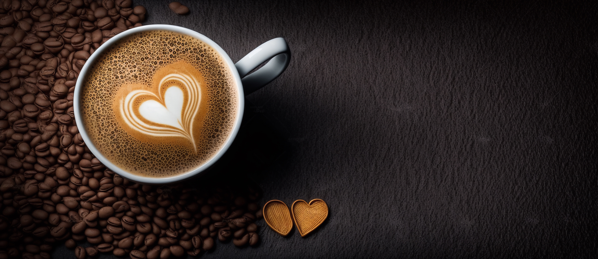
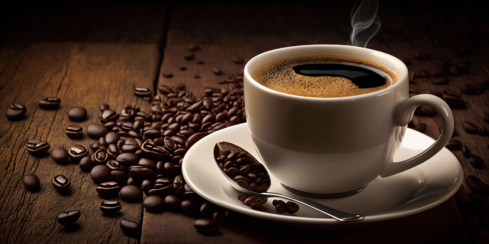

Long Black
The Long Black is a popular coffee drink from Australia and New Zealand. Here’s how it’s made: first, a double shot of espresso is poured into a cup. Then, hot water is added to the espresso, filling the cup.

Guillermo Coffee
Guillermo coffee is typically made with two shots of espresso and poured into a glass with two slices of lime. This coffee drink can be served hot or over ice.
